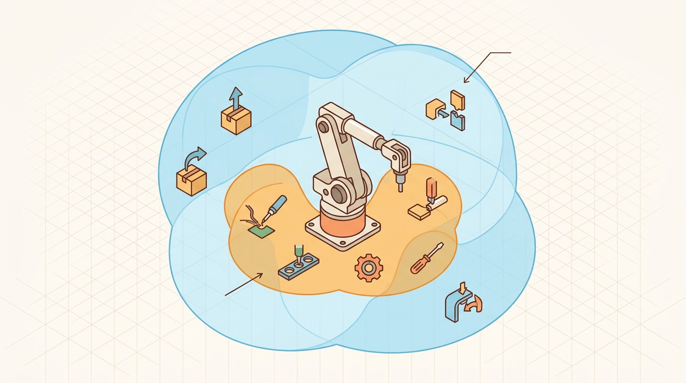

"Physics does not negotiate. A motion constraint is not a preference; it is the boundary of what the robot is allowed to want."
A Constrained Optimizer

This section assumes familiarity with joint angle representation from section 5.1 and with the inverse kinematics framework introduced in section 5.6. The constraint formulations developed here are extended in section 5.9, where dynamics add force and torque bounds to the kinematic limits. They resurface in Part VI alongside motion planning, particularly in section 30.3, where the Open Motion Planning Library (OMPL) and MoveIt 2 enforce these same constraint types at the trajectory-planning level.
A surgical robot reaches for a tool tray, finds a valid IK solution, and then destroys a nearby instrument when its elbow sweeps through a workspace it was never told to avoid. The math was correct. The constraint was missing. Motion constraints are the layer that converts "mathematically reachable" into "physically legal": joint angle limits, velocity and acceleration caps, collision clearance margins, and task-level requirements such as keeping a tray level. As embodied AI moves from isolated arms into shared human spaces, constraint violations are no longer recoverable errors but safety incidents. Here you will formalize these limits, learn how planners enforce them, and implement constraint-checking code you can wire directly into a robot controller.
This section develops the technical contract for Motion constraints into a usable mental model. First we define the object of study, then we connect it to the agent loop, then we test it with a compact implementation.
The key question in Motion constraints is practical: what must the agent know, what can it observe, what action is available, and what evidence shows that the action worked under the stated conditions?
A representation earns its place when it changes the measurable action interface. In Motion constraints, the reader should keep asking which decision becomes easier, safer, or more reliable.
Theory
For Motion constraints, the practical design rule is to make the interface inspectable before optimization begins: inputs, outputs, units, latency, bounds, and failure labels should all be visible in the saved artifact.
Consider a Universal Robots UR5 arm tasked with placing a circuit board in a tight enclosure. The IK solver finds a mathematically valid joint configuration, but the path between waypoints passes through a cabinet wall and peaks at 3.2 rad/s on joint 2 when the actuator limit is 1.5 rad/s. Without explicit constraints, the controller receives an infeasible command, triggers a safety stop, and drops the board. This is the core motivation: constraint-unaware planning produces plans that look correct in simulation and fail at the first motor command.
Motion constraints turn "move there" into "move there while staying legal." Some constraints are hard safety limits, such as joint bounds, collision clearance, and maximum speed. Others are task constraints, such as keeping a camera pointed at an object or keeping a carried cup upright. A planner that ignores the distinction may find a mathematically short path that the robot must reject at execution time.
A useful constraint is stated in a form that both the solver and the evaluator can check: equality constraints $h(q)=0$, inequality constraints $g(q)\le 0$, velocity limits $\dot q_{\min}\le \dot q\le \dot q_{\max}$, and acceleration or jerk limits for smooth execution. The same definitions should appear in the logs, not only inside the solver setup.
Joint-bound constraints ($q_{\min} \le q \le q_{\max}$) are always active and prevent hardware damage; violating them on a real arm triggers an emergency stop. Equality constraints like $h(q)=0$ are task-specific: a welding torch must stay tangent to a seam, or a waiter robot must keep its tray horizontal. Velocity and acceleration limits matter most during dynamic motion: a Boston Dynamics Spot leg moving at 12 m/s in simulation will shear its gearbox at 3 m/s in hardware. The key design decision is classifying each constraint as hard (reject the plan) or soft (penalize in the objective) before the solver runs, not after it returns a result.
The mechanism in Motion constraints is the contract between representation and action. Name what enters the module, what leaves it, which assumptions make that transformation valid, and which log would reveal a bad handoff.
Worked Example
The example clamps a candidate joint configuration into its bounds (constraint projection), then samples velocity along a cubic interpolation between two waypoints. The endpoint speeds are zero, yet the mid-segment speed peaks well above the limit. Checking only the knots accepts a trajectory the actuator cannot execute.
import numpy as np
q_min, q_max = np.array([-2.0, -2.0]), np.array([2.0, 2.0])
qd_max = 1.5 # rad/s per joint velocity limit
# Constraint projection: clamp an out-of-bounds candidate into joint limits
candidate = np.array([2.4, -0.3])
clamped = np.clip(candidate, q_min, q_max)
print("candidate clamped:", candidate, "->", clamped)
# Cubic (Hermite) blend q0 -> q1 over duration T, zero endpoint velocity.
# Endpoint speed is 0, but interior speed peaks at 1.5 * |q1-q0| / T.
q0, q1, T = np.array([0.0, 0.0]), np.array([1.2, 0.0]), 1.0
def q_of_t(t):
s = t / T
return q0 + (q1 - q0) * (3*s**2 - 2*s**3)
def speed(t, h=1e-5):
return np.max(np.abs((q_of_t(t + h) - q_of_t(t - h)) / (2*h)))
v_endpoints = max(speed(1e-4), speed(T - 1e-4))
ts = np.linspace(0, T, 200)
v_dense = max(speed(t) for t in ts[1:-1])
print(f"speed at endpoints : {v_endpoints:.3f} rad/s -> ok? {v_endpoints <= qd_max}")
print(f"peak speed (dense) : {v_dense:.3f} rad/s -> ok? {v_dense <= qd_max}")
# Endpoints pass; the dense check catches the mid-segment overspeed.
assert v_dense > v_endpoints, "dense check must reveal the interior peak"
The dense re-sample is the cheap guard that turns a "looks fine at the knots" plan into a verified one. Checking only the 2 endpoint knots passes the trajectory; checking 200 interior samples catches a mid-segment peak that would trip the actuator safety stop the moment the command reaches hardware. This is called the knots-only blindspot, and it is why a velocity limit imposed only at waypoints is not the limit the actuator experiences along the blend. The evaluation script must sample the same trajectory the controller will track.
In Drake's DirectCollocation, calling AddConstraintToAllKnotPoints with a joint-position bound does not impose velocity limits; you must add a separate prog.AddBoundingBoxConstraint on the velocity decision variables, or those limits are silently absent from the transcription. A quick diagnostic: after solving, call ReconstructInputTrajectory and numerically differentiate the resulting positions at 10x the collocation resolution; if any joint exceeds qd_max, your collocation mesh is too coarse or the velocity constraint was never added. MoveIt 2 users face the same gap: moveit_msgs/Constraints enforces joint-position bounds but trajectory velocity parameterization is a separate time_optimal_trajectory_generation step that must be run explicitly before execution.
The fragment should expose velocity, acceleration, curvature, collision, and actuator constraints as first-class limits. OMPL, MoveIt 2, and Drake can enforce them at scale once the constraint semantics are unambiguous.
Practical Recipe
- Write the observation, action, and success metric before choosing a model.
- Build a baseline that is simple enough to debug by inspection.
- Add the library implementation only after the baseline behavior is understood.
- Record failures as structured cases: perception error, state error, planning error, control error, or evaluation error.
- Run at least one perturbation test before trusting the result.
The common mistake in Motion constraints is to celebrate the component score before checking the closed-loop handoff. The failure usually appears at the boundary: stale state, wrong frame, delayed action, saturated actuator, or metric that ignores the real task cost.
When deploying a Franka Panda on a bin-picking cell, log the full per-timestep record, not just grasp success. Capture joint positions and velocities at 1 kHz, the active constraint set at each planner call, collision distances from MoveIt 2's occupancy voxels, and any velocity-limit clamp events from the joint_trajectory_controller. In one documented failure mode, the robot passed all waypoint checks. The cubic blend between two waypoints then peaked at 2.1 rad/s on joint 4, exceeding the hardware limit of 1.5 rad/s and triggering a protective stop 340 ms into execution. That stop appeared only as a discontinuity in the /joint_states topic, not in the planner's success flag. Without dense trajectory logging at controller resolution, the constraint violation stays invisible at the task-outcome level.
Treat motion constraints like a control-room label. If the label does not tell a future debugger what moved, what sensed, or what failed, it is decoration rather than engineering knowledge.
Learning constraint manifolds from demonstration (2024-2026). Rather than hand-coding equality constraints, recent work learns task constraint manifolds directly from human demonstrations. The LASA lab and collaborators (Figueroa et al., "Constrained Dynamical Systems from Demonstrations," ICRA 2024) show that a robot can recover and generalize a level-surface constraint such as keeping a tray horizontal by fitting a learned Riemannian metric to demonstration data, then projecting motions onto the inferred manifold at runtime. This removes the need to analytically derive $h(q)=0$ for each new task.
Differentiable constraint layers in model-predictive control (2024-2025). Groups at ETH Zurich and CMU (including the work behind TrajOpt 2 and MPINETS) are embedding constraint projections as differentiable layers inside neural MPC policies. The constraint layer solves a small quadratic program (QP) at each forward pass, making joint limits and collision margins part of the gradient graph. Carvalho et al. ("Motion Planning Diffusion," CoRL 2024) apply this to diffusion-based trajectory generation, enforcing hard constraints without post-hoc rejection sampling.
Contact-implicit constraint discovery for manipulation (2025-2026). Contact forces introduce inequality constraints that switch on and off unpredictably. The Locomotion and Manipulation lab at MIT and collaborators are extending contact-implicit trajectory optimization (CITO) to learn which contact modes are feasible before committing to a plan, combining complementarity constraints with learned contact models. This closes the gap between rigid-body constraint solvers and deformable or uncertain contact geometry.
Open problem for PhD students. Current constraint-projection methods assume a fixed constraint manifold known at planning time. An open problem is online constraint identification: given only proprioceptive feedback and task-outcome signals during execution, can a robot infer that a previously unknown equality constraint (an unseen balance requirement, an unmodeled linkage) became active, update the constraint set, and replan within a single manipulation episode without human intervention? The gap is connecting constraint-violation detection in the joint-state stream to efficient manifold re-estimation without restarting the solver from scratch.
Can you name the observation, state estimate, action, success metric, and most likely failure mode for Motion constraints? If not, the system boundary is still too vague.
Production Pattern
Motion constraints sits inside the Part II robotics contract: geometry defines where things are, kinematics defines what motion is possible, dynamics defines what motion costs, control defines how errors are corrected, and sensing defines what the agent can know on time.
If the planner checks joint limits only at waypoints and the controller interpolates freely between them, who is actually enforcing the constraint?
Write motion constraints as equations or inequalities that the solver and the evaluation script both see. This makes the treatment useful to readers approaching from theory, implementation, or research: the idea has an intuitive role, a formal interface, a runnable check, and a failure mode that can be reproduced.
For Motion constraints, kinematics maps joint or body motion into task-space motion without explaining forces. Preserve joint limits, frame conventions, velocity units, and singularity margins in the artifact.
| Tool or Library | What It Handles | Verification Check |
|---|---|---|
| Pinocchio | computes articulated-body kinematics, dynamics, and derivatives | Verify model frames, joint ordering, and derivative convention against the URDF. |
| Robotics Toolbox for Python | supports practical work on Motion constraints | Verify the library output against the hand-built baseline on one small case. |
| MoveIt 2 | supports practical work on Motion constraints | Verify the library output against the hand-built baseline on one small case. |
| Drake | models dynamical systems, multibody plants, optimization, and controllers | Verify scalar type, plant finalization, frame convention, and solver status. |
| ROS 2 control | supports practical work on Motion constraints | Verify the library output against the hand-built baseline on one small case. |
Use this recipe when turning Motion constraints into code, a simulator experiment, or a robot diagnostic. The point is not to use every library. The point is to keep the hand-built baseline and the maintained-tool path comparable.
- Write the joint vector, frame target, velocity convention, and constraint set before solving.
- Check forward kinematics on a known posture, then perturb one joint and inspect the end-effector delta.
- Compare an analytic or numerical Jacobian with Pinocchio, Robotics Toolbox, or Drake on the same robot model.
- Log residual error, joint-limit distance, manipulability, and solver iteration count in one artifact.
- Treat singularities and infeasible targets as design signals, not as solver annoyances.
For Motion constraints, compare methods only through one saved artifact that preserves the inputs, outputs, units, timestamps, latency budget, configuration, seed, metric definition, and failure labels relevant to this section. The comparison is meaningful only when the same script evaluates the same panel.
Extend the section exercise by adding one perturbation specific to Motion constraints and one latency or uncertainty check. Save the result in the EvidenceRecord schema, then explain which library output you trust and why.
Kinematic failures often arrive as a plausible pose with an impossible motion. Inspect which constraints were enforced during planning, which were checked only after planning, and which were hidden inside a controller. For this section, first reproduce one constrained update by hand, then rerun it through Drake, MoveIt 2, Pinocchio, Robotics Toolbox for Python, or a small NumPy projection. If the two disagree, inspect conventions and timing before changing the model.
Technical Core
Motion constraints needs a topic-native core: variables, equations or system contracts, an algorithmic procedure, an expected output, and a failure diagnosis. Figure 5.8.T summarizes the chain this section must preserve when moving from a teaching example to a real embodied system.
$h(q)=0,\quad g(q)\le 0,\quad q_{\min}\le q\le q_{\max},\quad \dot q_{\min}\le \dot q\le \dot q_{\max}$
Equality constraints define surfaces the motion must stay on, inequality constraints define forbidden regions, and rate limits define whether a geometrically valid path can be executed by real actuators. Treat all three as part of the motion contract.
Why equality constraints matter in embodied AI: a robot carrying liquid, welding a seam, or handing an object to a person must maintain a specific geometric relationship throughout motion, not just at start and end. Violating $h(q)=0$ mid-trajectory spills the cup or breaks weld contact even when the endpoint pose is correct. This is the gap between task success in simulation and task success on hardware.
How they work: $h(q)=0$ defines a constraint manifold in configuration space. Planners enforce it by projecting each candidate configuration onto this manifold via Newton iterations on $h$, or by parameterizing motion directly on the manifold's tangent space using the constraint Jacobian $\partial h/\partial q$. Violating configurations are pulled back to the nearest feasible point before any velocity or collision check runs.
Think of the equality constraint manifold like a hiking trail on a hillside. The full hillside is configuration space: every point is reachable in principle. The marked trail is the constraint surface $h(q)=0$: the robot must stay on it to keep the cup level, the welding torch tangent, or the handoff safe. If a gust of wind (a small numerical error or disturbance) nudges you a step off the trail, you do not abandon the hike; you take the shortest step back to the trail and continue. That "shortest step back" is exactly what constraint projection does: Newton iterations on $h$ pull the configuration perpendicularly back onto the manifold before any other check runs.
- Classify each constraint as equality, inequality, joint bound, velocity limit, acceleration limit, collision margin, or task-space requirement.
- State whether the constraint is enforced during planning, projected after each update, or checked only during validation.
- After every candidate update, log maximum violation, active constraints, and any clamped joint or velocity.
- Reject trajectories whose replay violates a constraint even if the endpoint and task residual look good.
| Contract Field | What To Specify | Why It Matters |
|---|---|---|
| State and observation | Variables, units, timestamps, frames, and uncertainty. | Prevents a model score from being mistaken for robot capability. |
| Action interface | Command type, limits, update rate, and safety fallback. | Makes the learned or planned output executable. |
| Evidence artifact | Trace, metric, configuration, seed, and failure label. | Allows baseline and library path to be compared in one pass. |
| Tool path | Modern Robotics, Pinocchio, Drake, ROS 2 tf2, MoveIt, NumPy | Shows the practical library route after the mechanism is understood. |
Expected output is a trajectory artifact with task residuals, maximum constraint violation, active-constraint labels, and replay validation on the same time grid used by the controller. A plan that satisfies constraints only at waypoints can still collide or exceed velocity limits between them.
A constrained-motion result fails when constraints are checked at endpoints only, collision distance is evaluated in stale frames, velocity limits are ignored during interpolation, or a soft penalty is mistaken for a hard safety guarantee.
Section References
Core references for Motion constraints: Modern Robotics; Murray, Li, and Sastry; Siciliano et al.; LaValle; and official documentation for Drake, MuJoCo, Pinocchio, CasADi, python-control, GTSAM, ROS 2, and OpenCV as applicable.
Use these references to check notation, frame conventions, units, solver assumptions, and maintained-library behavior.
Motion constraints is useful when it makes the perception-action loop more reliable, not when it merely adds a more impressive model name.
Design a method-matched experiment for Motion constraints. Specify the environment, observations, actions, metric, one perturbation, and the library output you would compare against the hand-built baseline.
Project Ideas
Beginner (weekend): Joint-limit constraint visualizer in PyBullet. Load a URDF robot model (such as a UR5 or Franka Panda) in PyBullet, sample random joint configurations, and build a real-time dashboard that color-codes each joint by proximity to its position and velocity limits. The key challenge is numerically differentiating the recorded joint trajectory at fine resolution to expose mid-segment velocity peaks that endpoint-only checking misses.
Intermediate (1-2 weeks): Constraint-aware motion planner in MuJoCo with ROS 2 visualization. Implement a sampling-based planner (RRT or RRT-Connect) on a MuJoCo robot model that enforces joint bounds, velocity limits, and a single equality constraint (keep the end-effector tray level throughout the trajectory) by projecting each candidate configuration onto the constraint manifold via Newton iterations. The key challenge is making projection reliable enough that the planner does not stall on narrow constraint manifolds, then streaming the validated trajectory to RViz2 via a ROS 2 joint-state publisher so constraint violations are visible in 3D.